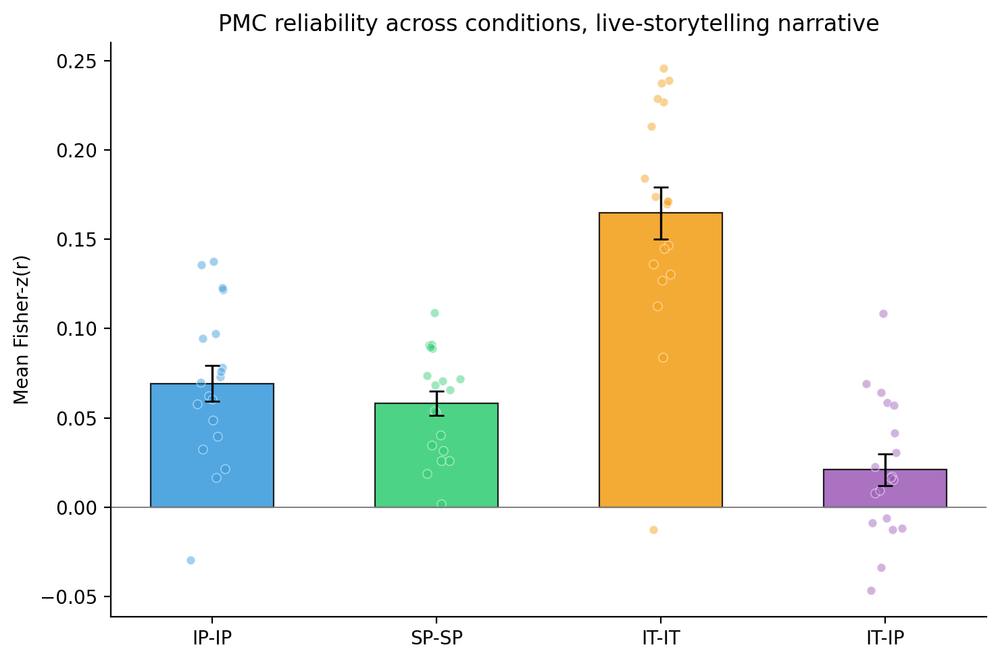
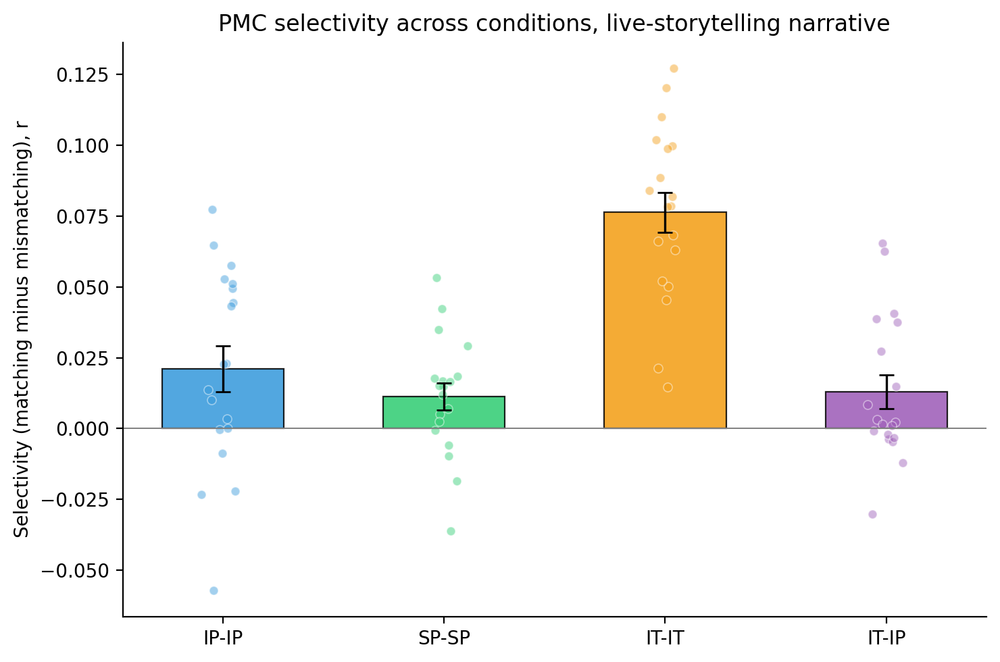
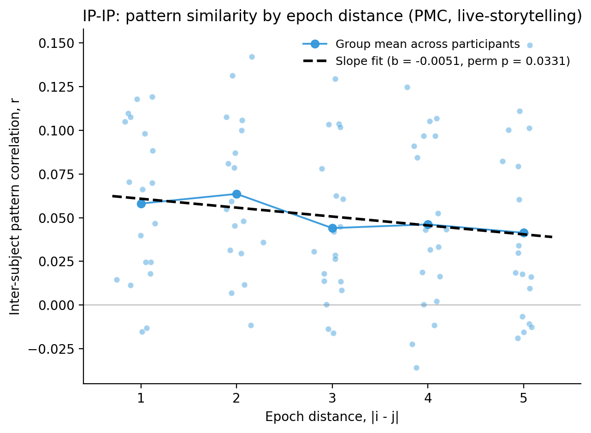
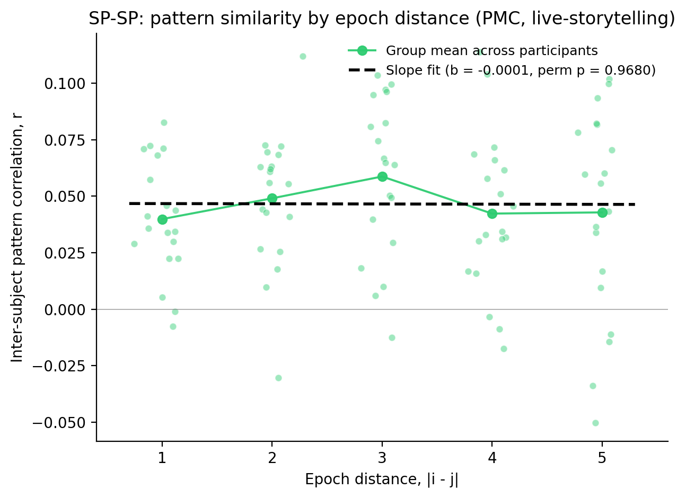
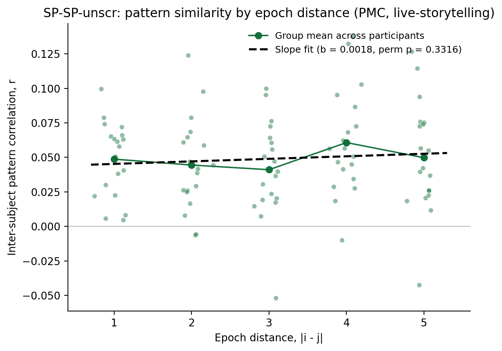
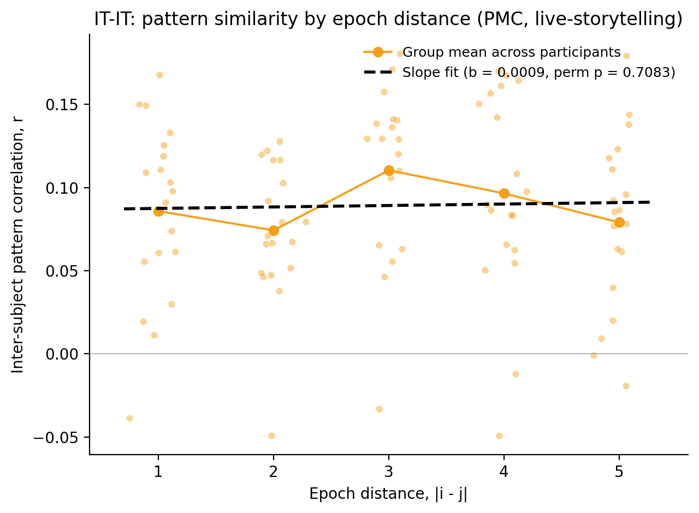
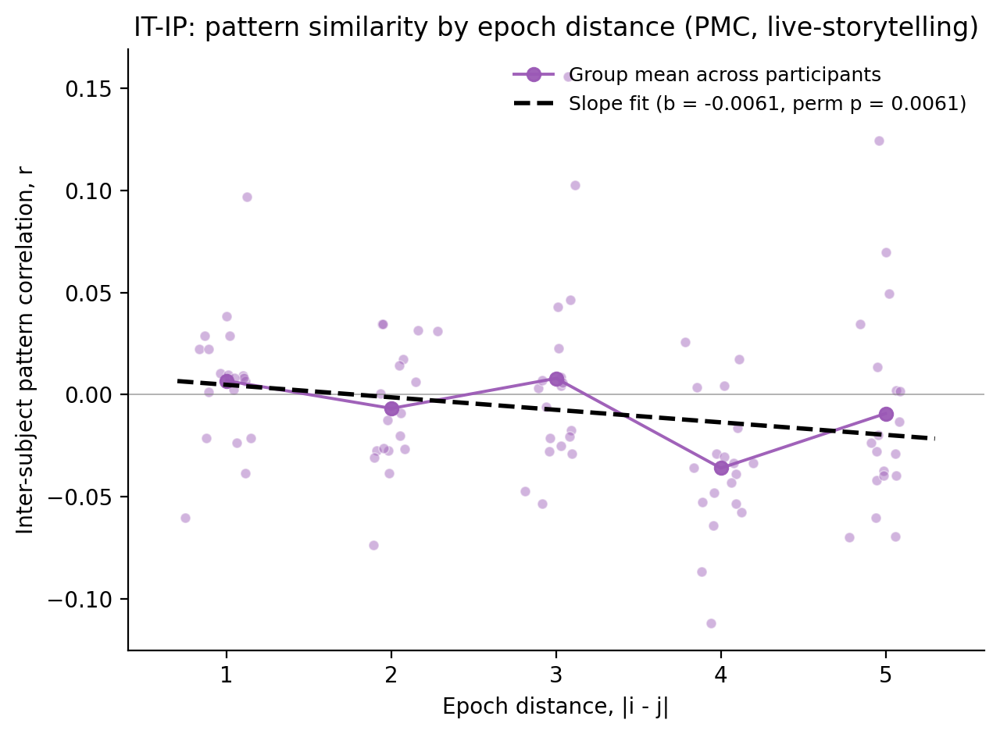

The same three pattern tests reported for the main narrative on PMC are replicated here on the live-storytelling narrative. The live-storytelling narrative has 11 interruption epochs (the main narrative has 17). Conditions are arranged as IP-IP, SP-SP, IT-IT (within-condition: each participant compared with the average pattern of the other participants in the same condition) and IT-IP (across-condition: each intact-theory-of-mind participant compared with the across-participant average of the intact-pause group).
We tested whether the multivoxel pattern in posterior medial cortex (PMC) at each interruption epoch is shared across participants. Inter-subject pattern correlation (ISPC) was measured in a 15-second window spanning the ten TRs that began 7.5 s after interruption onset (the first five post-onset TRs were discarded to avoid hemodynamic carry-over from the preceding story segment). For each participant and each epoch, the Pearson correlation between that participant's PMC pattern and the across-participant average PMC pattern of the other participants at the matched epoch was computed at every TR in the window and averaged across the ten TRs to a single per-(participant, epoch) score. All averaging across subjects was performed in Fisher-z space (each per-(subject, epoch) Pearson r was arctanh-transformed before any aggregation). The group ISPC is the Fisher-z group mean θ̂z; its uncertainty is the standard error across participants and the corresponding 95% confidence interval θ̂z ± 1.96 SE. Whether the group ISPC exceeds zero was assessed by a delete-one-subject jackknife on θ̂z followed by a one-sided sign-flip permutation test (10000 iter) on the subject pseudo-values (expected direction: > 0). The table gives the point estimate with its uncertainty, the test p, and the participant count n; the legend defines each column.
| Cond | n | ISPC mean (r) | ISPC mean (Fisher-z, θ̂z) | SE | 95% CI | p (sign-flip) |
|---|---|---|---|---|---|---|
| IP-IP | 19 | 0.0682 | 0.0693 | 0.0100 | [0.0497, 0.0889] | 1.00e-04 |
| SP-SP | 19 | 0.0575 | 0.0582 | 0.0068 | [0.0449, 0.0715] | 1.00e-04 |
| IT-IT | 19 | 0.1613 | 0.1647 | 0.0146 | [0.1361, 0.1933] | 1.00e-04 |
| IT-IP | 19 | 0.0207 | 0.0209 | 0.0089 | [0.0036, 0.0383] | 0.0144 |

Bars show the group-mean inter-subject pattern correlation in Fisher-z (θ̂z) in each scheme; whiskers are ±1 standard error of the mean across participants (SD of participant Fisher-z means / √nparticipants); dots are individual participant means. Schemes: intact-pause (IP-IP), scrambled-pause (SP-SP) and intact-theory-of-mind (IT-IT) compare each participant with the average pattern of the other participants in the same condition; IT-IP compares each intact-theory-of-mind participant with the average pattern of the intact-pause group.
We tested whether the shared PMC pattern at each interruption epoch is epoch-specific. For every ordered pair of epochs (i, j) the participant's matching set held the ISPC values at i = j and the mismatching set held the values at i ≠ j; participant selectivity was mean(matching) − mean(mismatching) and group selectivity the across-participants mean. To test whether group selectivity exceeds chance we reshuffled each participant's matching-versus-mismatching labels: the matching and mismatching ISPC values were pooled and randomly re-assigned to sets of the original sizes, participant selectivity was recomputed, and the group mean was recorded; 10000 iterations built the null. The one-tailed permutation p is (k + 1)/(10000 + 1), where k is the number of null group selectivities at-or-above the observed value. The table also reports the standard error of the group selectivity, a bootstrap 95% CI (10000 iter, resampling participants), a paired t-test on subject (matching − mismatching) values, and Cohen's d; the legend defines each column.
Primary stats (unshaded) | Descriptive / context (light gray)
| Cond | Selectivity | SE | 95% CI | p (perm) | n | Mean matching r | SEmatch | Mean mismatching r | SEmismatch | t | df | p (paired) | d |
|---|---|---|---|---|---|---|---|---|---|---|---|---|---|
| IP-IP | 0.0212 | 0.0081 | [0.0053, 0.0364] | 0.0095 | 19 | 0.0682 | 0.0098 | 0.0471 | 0.0060 | 2.620 | 18 | 0.0173 | 0.601 |
| SP-SP | 0.0113 | 0.0048 | [0.0021, 0.0206] | 0.0821 | 19 | 0.0575 | 0.0067 | 0.0462 | 0.0043 | 2.356 | 18 | 0.0300 | 0.540 |
| IT-IT | 0.0763 | 0.0070 | [0.0627, 0.0896] | 1.00e-04 | 19 | 0.1613 | 0.0141 | 0.0850 | 0.0085 | 10.838 | 18 | 2.55e-09 | 2.486 |
| IT-IP | 0.0130 | 0.0058 | [0.0024, 0.0245] | 0.0366 | 19 | 0.0207 | 0.0088 | 0.0077 | 0.0067 | 2.218 | 18 | 0.0396 | 0.509 |

Bars show the group-mean selectivity (mean matching minus mean mismatching r) across participants; whiskers are ±1 standard error of the mean across participants (SD of the participant selectivity values / √nparticipants); dots are individual participant selectivity values. Schemes as in the reliability figure above.
We tested whether the shared PMC pattern evolves across the narrative, by asking whether ISPC between two interruption epochs declines with their forward distance d = |i − j|. Distances d = 1 … 5 were used across the 11 live-storytelling epochs. For each participant the mean ISPC at each distance was computed, and the per-participant OLS slope of ISPC regressed on distance summarized how steeply pattern similarity declines; group slope is the across-participants mean. To test whether ISPC declines with epoch distance we reshuffled each participant's per-distance means across the distance labels, recomputed the participant's slope, and recorded the group mean; 10000 iterations built the null. The two-sided permutation p is (k + 1)/(10000 + 1), where k is the number of null group-mean slopes whose magnitude is at least as large as the observed slope. The table also reports the standard error of the group-mean slope and a descriptive one-sample t-test on per-participant slopes; the corresponding 95% confidence interval (a t interval on the per-participant slopes) is kept in the CSV.
The table reports one further scheme, SP-SP-unscr. In the scrambled-pause condition the story segments were played out of order, so the distance between two interruption epochs as the participant heard them is not their distance in the narrative. For SP-SP-unscr the scrambled-pause epochs are put back into the order the narrative actually runs in before the distances are measured, so that d = |i − j| counts narrative distance rather than presentation order. Everything else in the test is unchanged. This is the same scheme, and the same re-ordering, reported for the main narrative.
Primary stats (unshaded) | Descriptive / context (light gray)
| Cond | Slope | SE | p (perm) | n | t | df | p (t) |
|---|---|---|---|---|---|---|---|
| IP-IP | -0.00508 | 0.00247 | 0.0331 | 19 | -2.054 | 18 | 0.0548 |
| SP-SP | -0.00008 | 0.00210 | 0.9680 | 19 | -0.040 | 18 | 0.9685 |
| SP-SP-unscr | 0.00184 | 0.00183 | 0.3316 | 19 | 1.002 | 18 | 0.3295 |
| IT-IT | 0.00088 | 0.00266 | 0.7083 | 19 | 0.330 | 18 | 0.7456 |
| IT-IP | -0.00612 | 0.00195 | 0.0061 | 19 | -3.134 | 18 | 0.0057 |
Each plot shows participant-level mean pattern correlation at each forward epoch distance (dots), the group mean across participants (solid line), and the fitted slope line (dashed).




